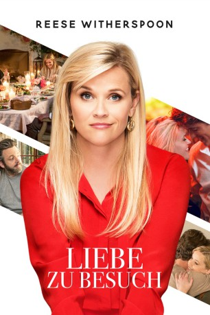

#8544 Liebe zu Besuch
Alternativ: Home Again
 
 IMDB-Wertung: 5.8 / 10
IMDB-Wertung: 5.8 / 10  Metascore: 41
Metascore: 41 
Alice (Reese Witherspoon) hat sich von ihrem Mann (Michael Sheen) getrennt und will nun neu durchstarten. Dafür zieht sie mit ihren zwei Töchtern (Lola Flanery, Eden Grace Redfield) nach Los Angeles – in ihre alte Heimat, ins Haus ihres verstorbenen Vaters. Nach diesem Tapetenwechsel will sich Alice als Innenarchitektin selbstständig machen. Während sie ihren 40. Geburtstag in einer Bar feiert, lernt sie die drei jungen Filmemacher Teddy (Nat Wolff), Harry (Pico Alexander) und George (Jon Rudnitsky) kennen, macht mit ihnen wild einen drauf – und weil das Trio eine Bleibe sucht, darf es schließlich in Alice‘ Gästehaus unterkommen. Der Aufenthalt verläuft anders als geplant: Harry hat es Alice angetan und zwischen den beiden beginnt eine Romanze. Doch plötzlich steht ihr Ex mit gepackten Koffern vor der Tür. Turbulenzen sind vorprogrammiert...
Jahr: 2017
Dauer: 96 Minuten
FSK: 0
Land: USA Studio: IITonspuren: DTS - ,
Untertitel: Deutsch,
Auflösung: 1080p (1920x1040) Größe: 7065 MB
Genre: Drama, Komödie, Liebe
Regisseur: Hallie Meyers-Shyer
Drehbuch: Hallie Meyers-Shyer
Soundtrack: John Debney
Darsteller:
 Reese Witherspoon als Alice
Reese Witherspoon als Alice Michael Sheen als Austen
Michael Sheen als Austen Candice Bergen als Lillian
Candice Bergen als Lillian- Pico Alexander als Harry
- Jon Rudnitsky als George
 Nat Wolff als Teddy
Nat Wolff als Teddy- Lola Flanery als Isabel
- Eden Grace Redfield als Rosie
 Lake Bell als Zoey
Lake Bell als Zoey Dolly Wells als Tracy
Dolly Wells als Tracy- Reid Scott als Justin
 P.J. Byrne als Paul
P.J. Byrne als Paul- Ben Sinclair als Nate
 Josh Stamberg als Warren
Josh Stamberg als Warren- Jen Kirkman als Kori
- Sophia Bui als 1970 Actress
- Hope Watson als 1970 Actress
- Kim Senser als 1970 Actress
- Jeremiah Caleb als Rajeesh
- Alex Alcheh als Jason A.
- Hank Chen als Jason G
- Paige Spara als Bartender
- Taylor Carr als Dance Club Bartender
- Samantha Ressler als Maya
- Christine Woods als Yoga Friend
- Doug Locke als Mad Youth Actor
- Shi Ne Nielson als Zoey's Decorator
- Robb Derringer als Dinner Guest
- Nick L. Williams als Waiter
- Kovar McClure als Rob
 Michael Cyril Creighton als Teacher
Michael Cyril Creighton als Teacher- Paige Cato als Miss Avery
- Brian Gilleece als Restaurant Patron (uncredited)
- Lora Hakanson als Sarah Plain and Tall (uncredited)
- April Martucci als Yoga Friend (uncredited)
- Matthew Saddler als French Boy (uncredited)
- Tandi Tugwell als Bar Patron (uncredited)
- Nicholas Walker als Restaurant Patron (uncredited)
- David Netto als John Kinney
- Gaylinn Dean als Little Alice
- Alex Noiret als 1970 Actress
- Gwyneth Glover als Gwyneth
- Karen Baxter als Parent (uncredited)
- David Wesley Marlowe als Justin's Friend (uncredited)
- Kate Petersen als Restaurant Patron (uncredited)
Datei: X:\2017(G-M)\Liebe zu Besuch (2017, FSK0, 1920x1040).mkv seit 22.03.2018
Festplatte: HD 2017(A-Z)-2018(A-F)
 Es gibt insgesamt 148 Filme in der Gruppe '2017(G-M)'
Es gibt insgesamt 148 Filme in der Gruppe '2017(G-M)'